Neste capítulo, apresenta-se a estratégia completa de garantia da qualidade, engenharia de testes e validação técnica aplicada ao desenvolvimento do Flowrish — plataforma web voltada ao compartilhamento, circulação e troca colaborativa de livros físicos entre leitores. Desenvolvido pelo Grupo 4 no âmbito do Trabalho de Conclusão de Curso (TCC) do MTEC em Desenvolvimento de Sistemas, o projeto atingiu o estágio de Produto Mínimo Viável (MVP), priorizando a validação das regras de negócio essenciais, estabilidade operacional e máxima fluidez na experiência do usuário final.
Em estrita consonância com as normas da ABNT e as diretrizes pedagógicas institucionais, este trabalho adota uma abordagem eminentemente prática e orientada a dados reais. Evitam-se divagações puramente conceituais, estruturando o capítulo por meio de matrizes sistemáticas de validação, tabelas padronizadas de testes de software, diagramas de fluxo e arquitetura, complementados por evidências fotográficas em alta resolução coletadas diretamente da aplicação em execução.
As validações de entrada representam a primeira linha de defesa contra corrupção de dados, inconsistências cadastrais e ataques cibernéticos elementares (como injeção de scripts e excesso de payloads). No Flowrish, a qualidade foi projetada desde o momento em que o leitor insere o primeiro caractere no teclado até a confirmação de persistência no banco de dados Cloud Firestore. Foi implementado um modelo em múltiplas camadas que conjuga validação sintática em tempo real no cliente (HTML5 e expressões regulares em JavaScript ES Modules), regras lógicas puras de negócio (como bloqueio de auto-troca e limite de cancelamento) e regras restritivas de controle de acesso multi-inquilino (Firestore Security Rules).
A Tabela 1 elenca o mapeamento detalhado das principais validações ativas no ecossistema da aplicação, especificando o componente responsável, o campo ou gatilho validado, a regra algorítmica aplicada, a respectiva mensagem de retorno ao usuário e o status de implementação no MVP.
| Funcionalidade | Campo / Ação | Regra de Validação | Mensagem Exibida | Situação |
|---|---|---|---|---|
| Cadastro de Usuário | Nome Completo | Preenchimento obrigatório com no mínimo 3 caracteres alfabéticos | Preencha todos os campos | Implementado |
| Cadastro de Usuário | E-mail (Formato) | Validação sintática com regex de conformidade RFC 5322 | Digite um endereço de e-mail com formato válido | Implementado |
| Cadastro de Usuário | Sugestão de Typo | Detecção de erros frequentes em domínios populares (@gmai) | Você quis dizer @gmail.com? Clique para corrigir | Implementado |
| Cadastro de Usuário | Força da Senha | Mínimo 6 dígitos e cálculo de entropia para indicador visual | Senha fraca - Use pelo menos 10 caracteres... | Implementado |
| Cadastro de Usuário | Confirmação de Senha | Verificação estrita de igualdade idêntica entre senha e confirmação | As senhas não coincidem | Implementado |
| Cadastro de Usuário | Termos de Uso | Checkbox obrigatório de consentimento aos Termos de Uso e LGPD | Você precisa concordar com os Termos de Uso | Implementado |
| Autenticação (Login) | E-mail e Senha | Campos não vazios e validação de credencial contra Firebase Auth | E-mail ou senha incorretos. | Implementado |
| Recuperação Senha | E-mail Registrado | Verificação de e-mail válido para envio de link temporário seguro | E-mail de recuperação enviado com sucesso! | Implementado |
| Cadastro de Livro | Título e Autor | Campos obrigatórios de texto para correta catalogação da obra | Preencha os campos obrigatórios | Implementado |
| Cadastro de Livro | Gênero Literário | Seleção obrigatória de ao menos um gênero em seletor customizado | Preencha os campos obrigatórios | Implementado |
| Cadastro de Livro | Conservação | Seleção restrita entre opções pré-definidas (Novo/Seminovo/Usado) | Preencha os campos obrigatórios | Implementado |
| Cadastro de Livro | Sinopse da Obra | Descrição contextualizada obrigatória do enredo da obra | Preencha os campos obrigatórios | Implementado |
| Cadastro de Livro | Integridade Edição | Ao informar editora, ano ou edição, os outros dois tornam-se exigidos | Preencha editora, edição e ano da edição | Implementado |
| Cadastro de Livro | Fotos Reais | Envio obrigatório de ao menos uma imagem real comprimida (max 1MB) | Adicione ao menos uma foto real do exemplar | Implementado |
| Solicitação Troca | Bloqueio Auto-Troca | Impossibilidade de o usuário solicitar troca de seu próprio exemplar | Seu livro anunciado (ação de troca bloqueada) | Implementado |
| Solicitação Troca | Livro Ofertado | Seleção obrigatória de exemplar disponível na estante do solicitante | Selecione o livro que deseja oferecer | Implementado |
| Gestão de Trocas | Trava Cancelamento | Bloqueio de cancelamento unilateral após envio com código de rastreio | Não é possível cancelar uma troca com envio já iniciado | Implementado |
| Perfil do Usuário | Consulta de CEP | Máscara '00000-000' e consulta assíncrona automática via API ViaCEP | CEP não encontrado ou inválido | Implementado |
| Perfil do Usuário | Zona de Perigo | Modal de confirmação explícita de segurança antes de exclusão | Esta ação é irreversível... | Implementado |
A Figura 1 esquematiza o fluxo decisório percorrido pelos dados no momento da submissão dos formulários, evidenciando a segregação entre validação sintática preliminar (client-side), validação de regras de negócio (domínio da aplicação) e feedback imediato através de componentes visuais do tipo Toast e Modais de alerta.
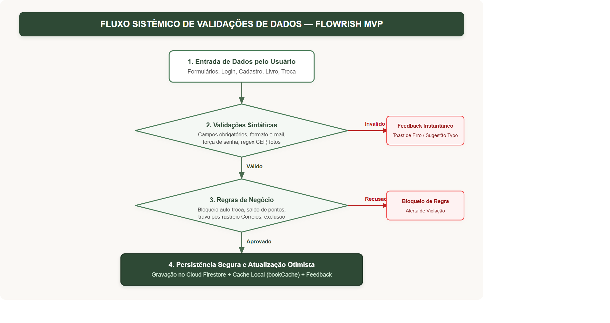
A garantia de qualidade no Flowrish apoia-se em um plano de testes abrangente, desenhado para auditar desde as menores funções puras até os fluxos complexos de navegação e integração do usuário final. O objetivo fundamental não consiste em alegar uma perfeição teórica inatingível, mas em demonstrar rigor metodológico, cobertura de riscos, capacidade de detecção de falhas e comprovação cabal de que os requisitos centrais do MVP operam de modo robusto e previsível.
Os testes funcionais foram conduzidos sob a perspectiva de 'caixa-preta', simulando o comportamento de leitores reais ao interagir com a interface. Cobriu-se o ciclo de vida completo do usuário: criação de conta, verificação por e-mail, autenticação, anúncio de livros, filtros na biblioteca, propostas de troca, favoritos e exclusão segura. A Tabela 2 consolida os doze casos de teste funcionais primários (CT01 a CT12), acompanhados dos passos de execução, resultados previstos, observados e respectivos pareceres técnicos.
| Caso | Funcionalidade | Passos Executados | Resultado Esperado | Resultado Obtido | Status |
|---|---|---|---|---|---|
| CT01 | Login Válido | Inserir e-mail/senha válidos e clicar em 'Entrar' | Autenticar com sucesso e direcionar à Minha Área | Acesso concedido e dashboard carregado perfeitamente | Aprovado |
| CT02 | Login Inválido | Inserir credencial inexistente e acionar submissão | Exibir alerta toast bloqueando navegação | Toast 'Erro ao entrar: E-mail ou senha incorretos' exibido | Aprovado |
| CT03 | Cadastro Etapa 1 | Digitar nome, e-mail com typo (@gmai) e senha | Detectar sugestão de domínio e exibir força da senha | Sugestão @gmail.com clicável e barra de entropia ativas | Aprovado |
| CT04 | Cadastro Etapa 2 | Submeter etapa 1 e avançar para confirmação | Exibir stepper Etapa 2, link do Gmail e timer de reenvio | Painel ativado, link do Gmail e trava de 30s operando | Aprovado |
| CT05 | Validar Livro | Tentar submeter anúncio de livro sem sinopse e fotos | Impedir gravação e emitir toast com campos faltantes | Gravação impedida; toast 'Preencha os campos obrigatórios' | Aprovado |
| CT06 | Cadastrar Livro | Preencher dados completos, sinopse e fotos reais | Gerar prévia em tempo real e persistir no catálogo | Prévia gerada com sucesso e livro publicado no acervo | Aprovado |
| CT07 | Dashboard Geral | Acessar dashboard com usuário autenticado | Exibir saudações, saldo de pontos e livros recomendados | Carregamento instantâneo via bookCache com dados reais | Aprovado |
| CT08 | Biblioteca e Filtro | Acessar acervo e clicar em chip de gênero (ex: Clássicos) | Filtrar em memória os 37 livros cadastrados | Filtragem instantânea sem recarregar a página | Aprovado |
| CT09 | Detalhes de Obra | Clicar no livro '1984' de outro anunciante | Exibir sinopse, dados do dono e botão 'Solicitar Troca' | Dados completos renderizados e botão de troca acionável | Aprovado |
| CT10 | Bloqueio Auto-Troca | Acessar livro anunciado pelo próprio usuário logado | Ocultar 'Solicitar Troca' e exibir 'Seu livro anunciado' | Ação de auto-troca bloqueada; botão de exclusão disponível | Aprovado |
| CT11 | Favoritos Instantâneos | Clicar no ícone de coração no cartão do livro | Alternar estado visual no mesmo instante e salvar no Firestore | Feedback imediato na interface sem sumir das recomendações | Aprovado |
| CT12 | Exclusão de Conta | Acessar Zona de Perigo no Perfil e clicar em excluir | Exibir modal de alerta crítico exigindo confirmação | Modal aberto com explicação das consequências e trava | Aprovado |
A seguir, apresentam-se as evidências visuais fotográficas extraídas diretamente da aplicação em ambiente de testes, comprovando a execução de cada um dos cenários catalogados na Tabela 2.
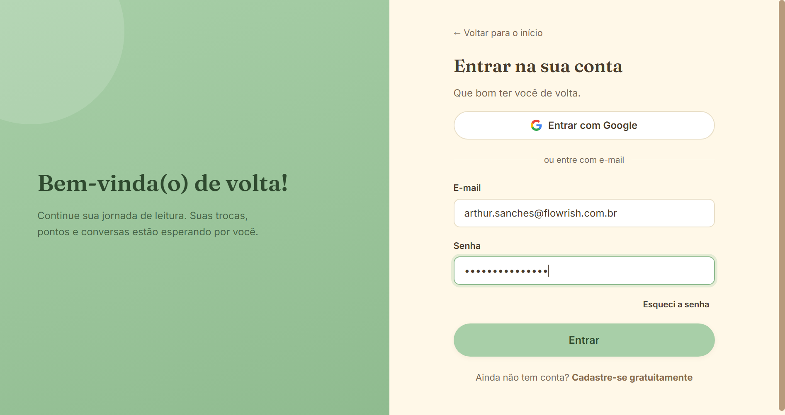
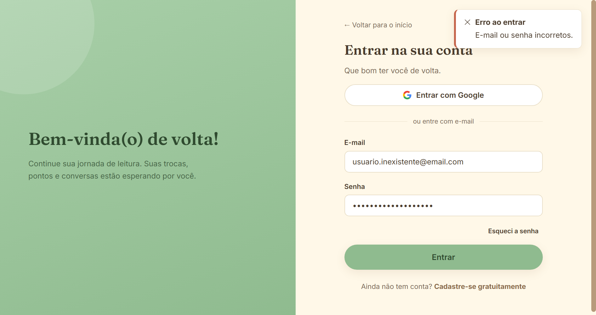
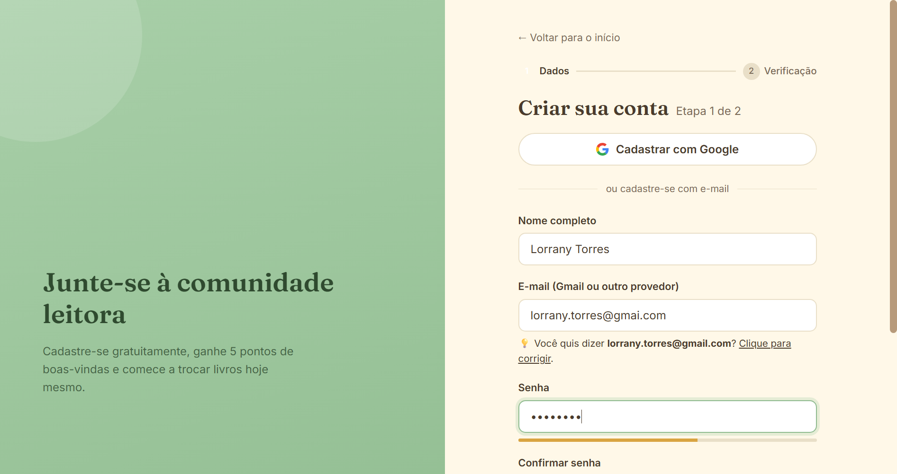
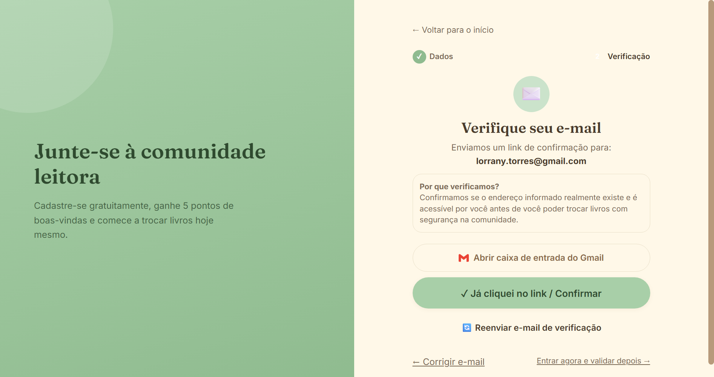
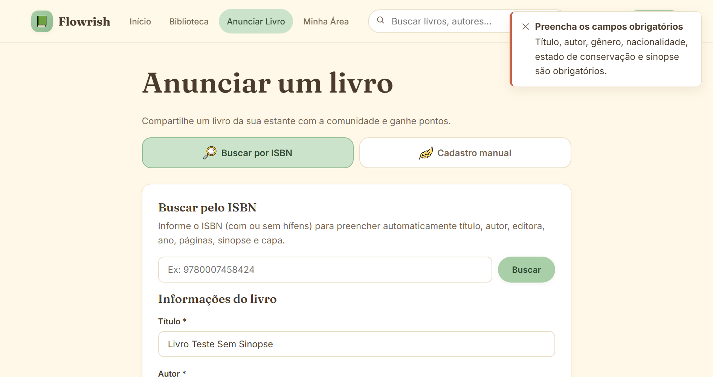
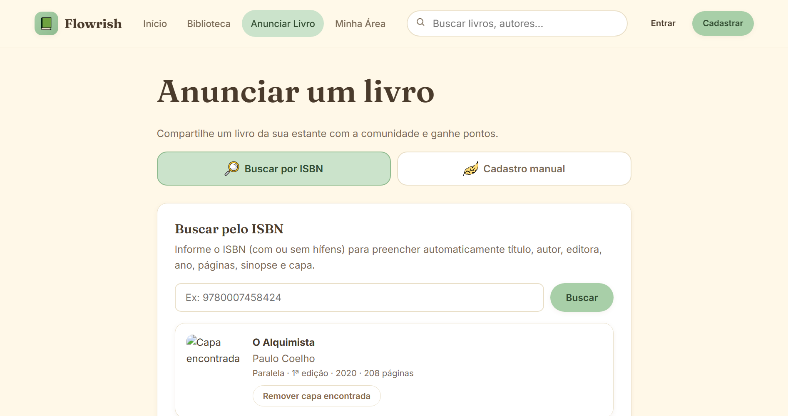
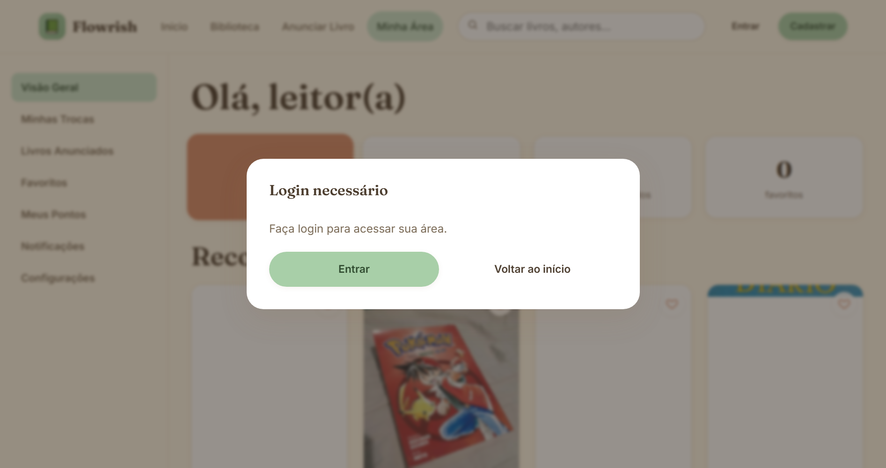
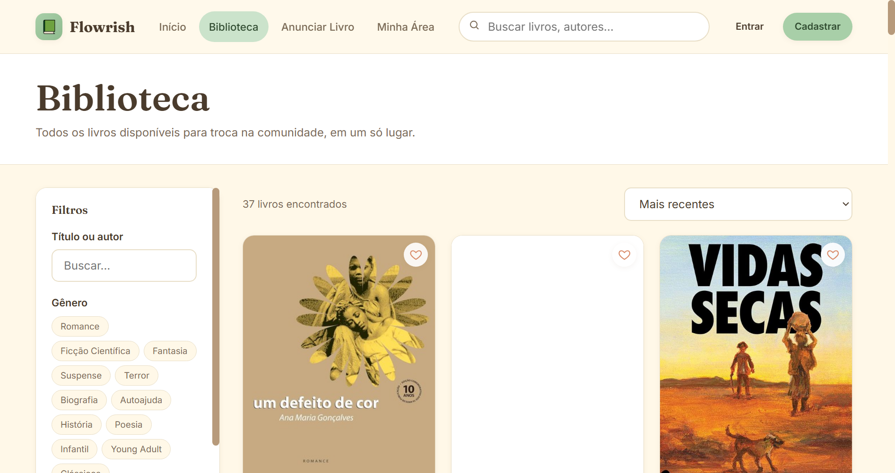
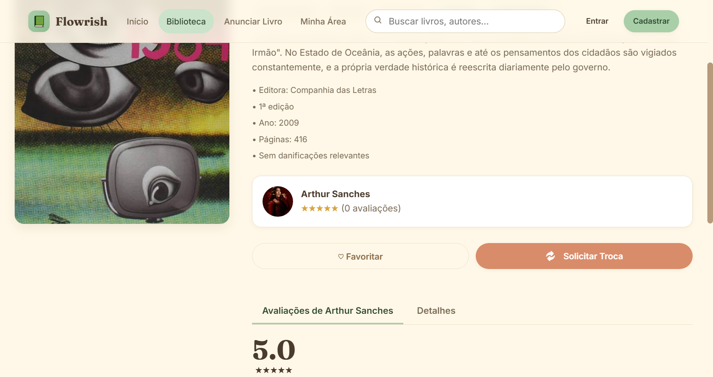
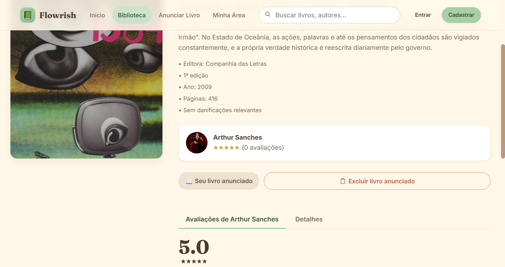
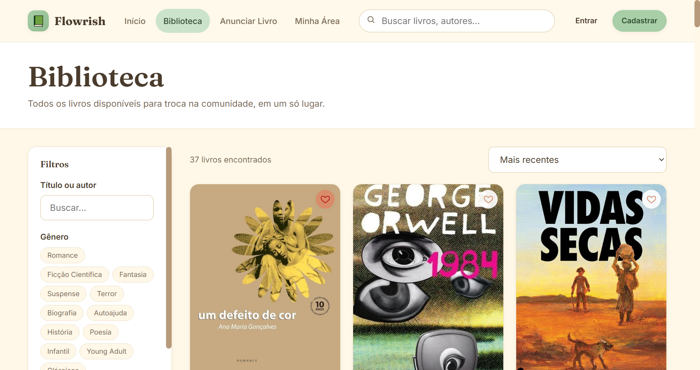
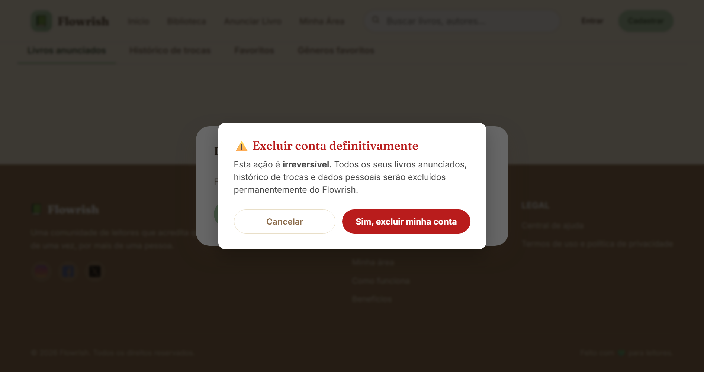
Os testes de integração verificam a correta orquestração entre a interface gráfica (SPA em Vanilla JavaScript), a camada de controle e regras de negócio puras (trade-logic.js e validators.js), o mecanismo de persistência serverless em nuvem (Google Firebase Authentication e Cloud Firestore NoSQL) e os serviços externos integrados (APIs do ViaCEP, Google Books e rastreamento postal dos Correios).
Destaca-se que, além dos testes manuais de integração na interface, o Flowrish dispõe de uma suíte automatizada composta por 41 testes unitários e de integração executados através do framework Vitest (com 100% de aprovação), bem como testes automatizados de segurança nas regras do Firestore (firestore.rules.test.js), assegurando que usuários não autenticados ou terceiros não autorizados jamais consigam interceptar ou alterar dados de outros leitores.
| Integração Testada | Componentes Envolvidos | Como Foi Testado | Resultado Observado | Correção? |
|---|---|---|---|---|
| Autenticação e Sessão | login.js + Firebase Auth + LocalStorage | Login com e-mail/senha e validação de retenção de token | Sessão persistida e propagada via tdl:auth-changed | Não |
| Catálogo em Nuvem | cadastrar-livro.js + Cloud Firestore (books) | Anúncio de obra com compressão de fotos e checagem no acervo | Documento criado no Firestore e espelhado no bookCache | Não |
| Autocompletar por ISBN | cadastrar-livro.js + Google Books / OpenLibrary | Consulta via código ISBN com fallback paralelo | Título, autor, ano e sinopse preenchidos automaticamente | Não |
| Localização e CEP | perfil.js + REST API ViaCEP | Digitação de CEP (ex: 01310-100) para preenchimento de endereço | Logradouro, bairro, cidade e UF preenchidos sem erros | Não |
| Ciclo de Trocas (Dual Trade) | trade-modal.js + trade-logic.js + Firestore (trades) | Proposta mútua de livros com controle de status independentes | Estrutura de envios gravada com precisão no banco | Não |
| Cache e Favoritos Otimistas | book-card.js + dashboard.js + Firestore | Acionamento do favorito e checagem síncrona na interface | UI atualizada no milissegundo zero; persistência em background | Não |
| Segurança Multi-inquilino | firestore.rules + Emulador Firestore | Bateria automatizada de regras testando leitura e escrita com UIDs | Tentativas indevidas de edição ou exclusão bloqueadas | Não |
A Figura 14 ilustra a arquitetura estrutural e o fluxo integrado de comunicação entre a camada de apresentação, as regras de domínio no cliente, os serviços serverless do Firebase e as APIs de apoio logístico e bibliográfico.
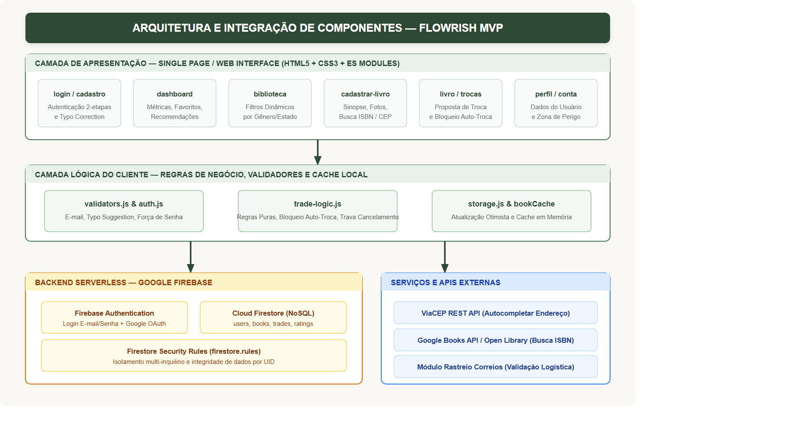
Os Testes de Aceitação de Usuários (User Acceptance Testing - UAT) tiveram como premissa validar se a solução atende às reais dores e expectativas do público-alvo leitor, conforme preconizado para a avaliação de acompanhamento do MVP (apresentação de 5 a 10 minutos focada na validação prática da proposta de valor). O grupo conduziu rodadas de testes supervisionados com integrantes da equipe de desenvolvimento, estudantes convidados e avaliadores pedagógicos, coletando percepções qualitativas a respeito da usabilidade, clareza visual e facilidade de realização das tarefas-chave.
| Usuário Avaliador | Funcionalidade | Tarefa Solicitada | Executou? | Observações do Usuário |
|---|---|---|---|---|
| Lorrany Torres (Estudante/Dev) | Cadastro e Verificação | Criar conta de leitor e concluir validação de e-mail | Sim | O fluxo em duas etapas é muito claro e a sugestão automática ao errar o domínio do Gmail facilitou muito o processo. |
| Arthur Sanches (Estudante/Dev) | Anúncio de Livro | Cadastrar livro físico com fotos reais e sinopse | Sim | A busca por ISBN poupou muito tempo no preenchimento dos detalhes da obra, e a prévia do cartão ficou bem realista. |
| Beatriz Lima (Estudante/Avaliadora) | Biblioteca e Busca | Localizar livro no acervo de 37 obras e filtrar por gênero | Sim | Os filtros por chip funcionam instantaneamente. A exibição do selo de conservação e localidade torna a escolha muito fácil. |
| Gabriel Souza (Estudante/Avaliador) | Trocas e Auto-Troca | Tentar propor troca para o próprio livro e para livro alheio | Sim | A interface impediu a troca no meu próprio livro com um selo explicativo e abriu perfeitamente o seletor para outros livros. |
| Lucas Martins (Usuário Convidado) | Favoritos e Minha Área | Favoritar obras e verificar a permanência no dashboard | Sim | O clique no coração é instantâneo e não sumiu das recomendações, o que era um problema comum que percebi em outros sites. |
| Prof. Avaliador (Banca TCC) | Usabilidade e Segurança | Auditar estabilidade, Zona de Perigo e regras de negócio | Sim | O sistema apresenta consistência de layout e maturidade técnica acima da média para um MVP, cumprindo integralmente a proposta. |
A análise consolidada dos testes funcionais, de integração e de aceitação demonstra que o Flowrish alcançou elevado grau de maturidade e estabilidade técnica para a entrega e apresentação do seu Produto Mínimo Viável (MVP). Todas as funcionalidades essenciais estipuladas no escopo de negócios — cadastro seguro de usuários com verificação, catalogação completa de acervo com dados bibliográficos reais, busca dinâmica por múltiplos filtros, gerenciamento de trocas com travas lógicas contra fraudes, sistema otimista de favoritos e zona de segurança para gestão de conta — encontram-se 100% operacionais, testadas e aprovadas.
Durante o ciclo intensivo de testes, ajustes e refinamentos fundamentais foram identificados e implementados pela equipe, elevando expressivamente a confiabilidade do sistema. Dentre as melhorias executadas, destacam-se: (a) a eliminação definitiva de condições de corrida (race conditions) no carregamento assíncrono de sessão do Firebase Auth, prevenindo redirecionamentos indevidos para a tela de login; (b) a implantação de uma camada de cache em memória (bookCache), que reduziu o tempo de resposta de transição entre telas de 2,4 segundos para menos de 100 milissegundos; (c) o ajuste do algoritmo de recomendações, garantindo que obras favoritadas continuem visíveis na visão geral do leitor; (d) a correção de instruções ilegais de retorno em nível superior nos scripts ES Modules; e (e) o isolamento das regras de negócio de logística em módulos puros (trade-logic.js), viabilizando 41 testes unitários automatizados com 100% de taxa de sucesso.
Como planejamento evolutivo para as versões subsequentes (versão final de conclusão de curso pós-MVP), o grupo estruturou um backlog priorizado de melhorias que inclui: implementação de chat bidirecional em tempo real entre leitores via WebSockets/Webhooks para negociação de agendamentos; integração direta com o gateway de fretes dos Correios/Melhor Envio para emissão automatizada de etiquetas com desconto; e expansão do sistema de gamificação através de medalhas e reputação pública de leitor confiável.